北の京芦別/北海道芦別市
〜後編〜
前編までのあらすじ
・・・
北海道にあるという謎の仏教テーマパーク「北の京芦別」についに足を踏み入れた名探偵団団五郎（仮名）！そこには摩訶不思議な甲冑の群れや回転仏像などが団五郎を待っていた！！しかしおおかたの施設は団五郎の予想を裏切り閉鎖されていた。最後の手がかりを求めて団五郎は北の空に聳え立つ大観音に向かった！！・・・
で、大観音である。パンフには本館よりモノレールで、と書かれていたのですっかりその気でうきうきしていたら、モノレールは現在廃止されたとの事。残念無念。
仕方なく歩いて向かう。入口のゲートで入場料を払おうと思ったら、え！入場無料なの？近くにいたスタッフに話を聞くと99年の7月から（あまりにも人が来ないので）入場無料になったとのこと。その際、モノレールも廃止されたそうである。
いくら人が来ないからといっても入場無料とは太っ腹過ぎはしないだろうか。単純に考えても館内の設備費やスタッフの人件費、メンテやランニングコストを考えたら相当の維持費がかかる筈なのに。
そういえばここ、芦別のもうひとつのテーマパーク、カナディアンワールドも入場無料になっていたような気が・・・一体どうなっているんだろう。
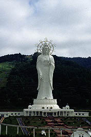 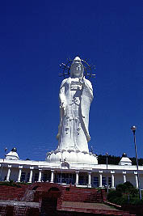 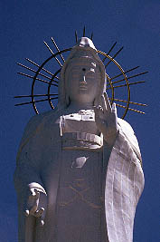
・・・とにかく大観音を目指す。入口ゲートから大観音までのアプローチはレンガ敷きの雛壇状の庭園になっている。タージ・マハール庭園を模したものだそうです。
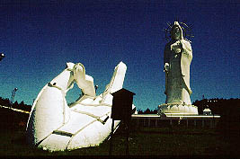
庭園の左右には実際に使われた大観音像の両手の型枠が置かれており、その大きさを実感させられる。
内部に入り、胎内の各所にあるスタンプをおす集印帳を買いながら土産屋のおばちゃんとしばし話し込む。曰くここの大観音は平成元年にオープンし、高さ88メートルは当時日本一だったそうである。
当サイトのファンの方々なら御存じのようにその後仙台大観音や小豆島大観音、牛久大仏などの「大型新人」の出現によって日本一の座は追われてしまうのだ。
しかしその事を告げるとおばちゃんめげずに「それでもここの大観音様が日本で一番豪華だよ。」などと泣ける事を言う。よっしゃあ！全国の大観音を見てきたこの俺様がいっちょ鑑定してやろうじゃないか。おばちゃんちょっと待ってな！
案内によると2階のロビーからエレベーターで一気に20階まで行きそこから螺旋階段を下りてきて拝観するようになっている。集印帳に載っていた案内図が秀逸だったので紹介しておこう。
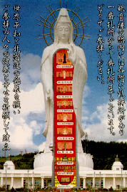
てなわけでエスカレーターで二階の「やすらぎロビー」に向かう。むむむ、できる。確かにおばちゃんの言うようにゴージャスである。ニ層分吹き抜けのロビーには中国風の装飾が施され、先程までのショボい施設の雰囲気は見当たらない。
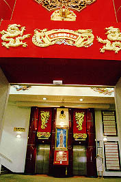 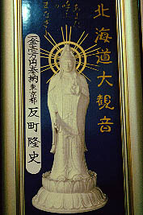
そして胎内に奉納する大観音パネルをなんとあの反町隆史が奉納していた！土産屋のおばちゃんによると映画「GTO」の撮影がカナディアンワールドで行なわれていて、その撮影の合間に遊びに来たらしい。で、こんなトコでも「追っかけ」はいたらしく、後からソリマチを追い掛けてエレベーターに乗り込んで行ったらしいのだが、途中で見失ってしまい、結局出口でずーっと待っていたそうな。フッフッフッ、いくら一方通行といえど大観音を甘く見ちゃ行けませんぜ、こういうところにはけっこう脇道や逃げ道、小部屋なんかがあるんだから。と、いうわけで大観音ひとくちメモでした。
さて、エレベーターは20階へと向かう。ドアが開くと正面には金ぴかの本尊が祀られている。で、その裏手は展望台として屋外に出られるようになっている。そこはちょうど観音様の胸の部分で目の前に左手が迫ってくる。そして眼下には五重塔や三十三間堂、十二支苑などが見える。本館からこちらに向かって延びてくるモノレールの線路が悲しい。
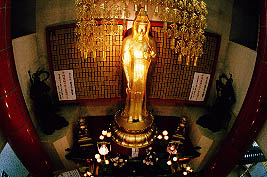 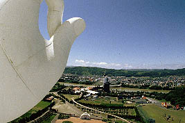
ここの上階、つまり22階（ここのフロアは構造上、1階を除いて全て偶数階しかない）からは肩口からのビューが楽しめる。
で、20階から螺旋状の階段を下って18階に行く。なんとそこから8階まではドーンと吹き抜けになっている。下を覗き込むと改めてこの大観音像の胎内空間の大きさに驚く。
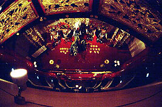 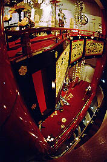 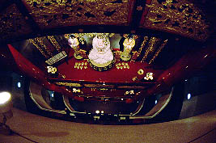
そして赤い柱に支えられた各フロアの祭壇には恐らく台湾で作られたと思われる観音像が祀られているのだ。
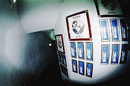 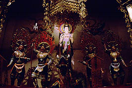
参拝者は吹き抜けを挟んで観音像と対峙する格好になる。ほんの数メートルしか離れてないのに深い吹き抜けによって我彼の断絶感が強調されている。こんなに身近なのに手が届かないという人間と観音の距離感の演出。
白衣観音、竜頭観音、如意輪観音、延命南海観音、慈母観音、聖観音と螺旋階段を下りてくる度に派手な観音像が現れる。各フロアにはヘッドフォンが置いてあり各観音の説明が聴ける。
吹き抜けの最下層部の8階に至る。あらためて上を見上げる。赤い柱がニ本上に向かって聳え立つその様は、観音像の内部に赤いビルを建てたかのようだ。
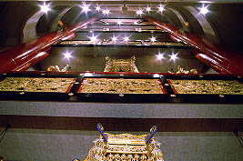
6階の癌封じ観音を経由して4階の仏教資料館へ。
ここには各観音の仏画、陶器仏像が円状に展示されている。
日本の各宗派の開祖が並んでいるのが、特定の宗教団体に属せず、非宗教法人を貫いているここの立場をよく物語っている。
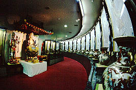
そう、ここは寺ではなく純粋な観光施設なのだ。
ヘルスセンターに始まり、十二支苑、大観音、ホテル五重塔に三十三間堂にいたるまで、これらは全て観光の為の施設なのである。
だからこそ五重塔のホテルがあり、大観音にモノレールで行くという奇抜な発想がまかり通るのであろう。
教義に縛られず見世物に徹した仏教テーマパークが全国にもっと増えたら楽しいのになあ、といつも思っている私だけにこの北の京芦別を高く評価したい。これからも宗教というものから一歩距離を置いたスタンスを保っていってもらいたいものだ。ただし潰れなければ、の話だが。
1階に戻るとおばちゃんが待ちわびたように「どうでした？」と聞いて来た。
「確かに日本で一番豪華な大観音でした」という私のコメントに嘘はなかった。多分。
帰りがけに門外の案内図を見て私が最上階と思っていた22階（観音様の肩口にあたるフロア）より上にもさらに2フロアある事を発見。頭の部分まで登れたとは、くぅ〜、不覚なり〜。
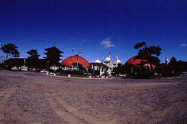
珍寺大道場 HOME